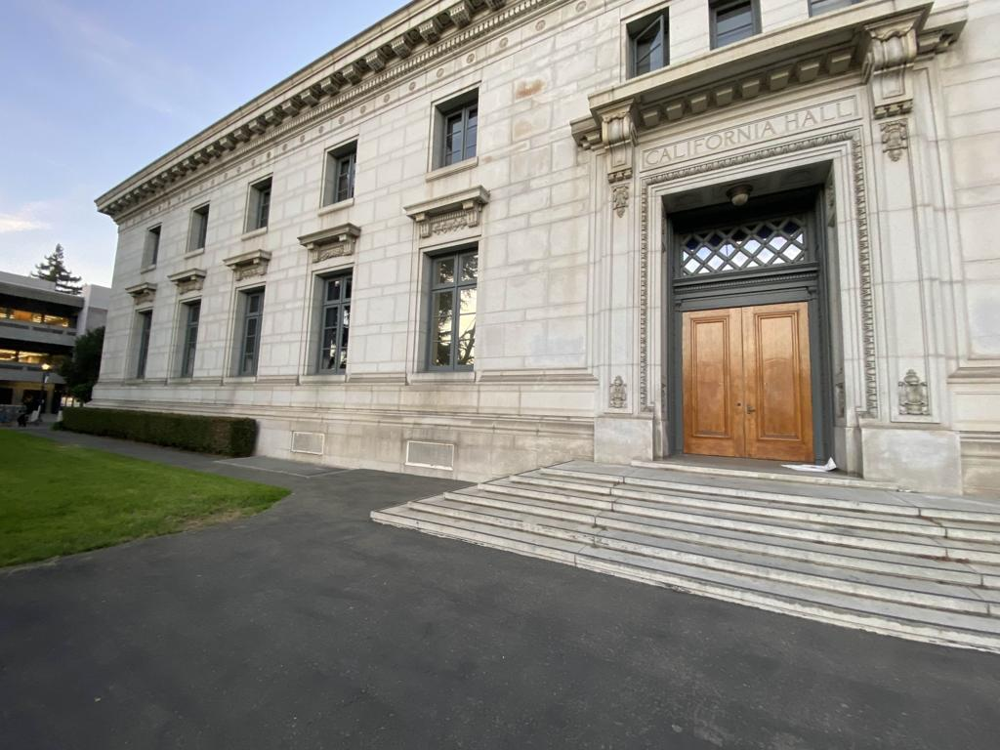

Project 4 - Stitching Photo Mosaics
Part 1: Naive Approach
Shoot the Pictures
For this part, I chose scenic shots to create mosaics.
The first image I chose was near Moffit Library, near the entrance to a building.
The second image I chose was near Berkeley Way West.
The third image I chose was of my living room.
To take these images, I first took an image in a fixed direction.
Then, I rotated my phone camera either directly right or left, so that the two images wouldn't be seperated by rotations.
To rectify images, I chose a picture of my roommate's Spongebob figure, since the shape is overall rectangular.
I also chose a random textbook lying around.
Below are the images I took:
Picture turned leftward near Moffit

Picture of building near Moffit
1st pic near Berkeley Way West

2nd pic near Berkeley Way West
2nd image of room

Original image of Spongebob
Original image of textbook
Recover Homographies
For this part, I used the same label selection tool provided in the previous project.
For each image, I selected more than 4 points, usually 6-8 points, to create a overdetermined system of equations.
With each point, I first stacked them into two lists, one for image 1, and the other for image 2.
For a pair of x,y values for a single point, the equation becomes H * [x_1, y_1, 1].T = [x_2, y_2, 1].T.
To solve this, we try to apply SVD.
We move all of the terms from the previous equation to one side, and then we take the coefficients of the terms of H and stack them together to create matrix A.
This means that the first row of A is for all of the x terms, and the second row is for y terms.
Because we have moved all of the terms to one side, we want to find some solution such that A*h = 0, where h is the vector of all terms from H stacked together.
From SVD, we know that A = U * S * V.T, and that the last column of V is the solution to A*h = 0.
After getting the last column, we now need to normalize it by making the bottom-right element 1.
And to reverse this homography, we simply need to take the inverse of H, which is what computeH() will return.
Warping Images and Rectification
Using computeH() from the previous part, I implemented warpImage() to warp the images.
First, I got the homography H of the image to be warped and passed it in as a parameter.
Then, I got the corners of the image.
This is because I need to warp the corners in order to get the new dimensions of the warped image.
Using this new information, I initialized a new image with large enough dimensions to store the warped image.
Then, I got the polygons of the warped image, and I mapped this to the base image by using the inverse warp, meaning I took the inverse of H.
Finally, I copied the pixels from the warped image onto this canvas, producing the final warped image.
To test this part out, I tried rectifying the images below.
Because of Spongebob's shape, the basic rectangular area has been rectified, where the face now appears to be facing more towards the front.
The book also appears to be facing straight up.
However, because the book was a bit worn out, the edges were not perfectly straight.
The plushie's edges also were a bit round, since it is a plushing, and it is not a figurine with a fixed frame.
Regardless, the images look good are are rectangular, with its face facing straight out of the screen.
Below are the before and after images:
Rectified Spongebob

Blend images into a mosaic
For this part, I simply used computeH and warpImage for the majority of the logic.
First, I used warpImage to get the warped image.
Next, I needed to create a mask for both images, from which I could create a mask of the overlapping region for the two images.
This is crucial, because I don't want to naively blend the two images together.
Both images do not completely fill up the entire canvas space, so there are a lot of black space which will ruin such a naive blend.
By using this mask of the overlapping region between the two images, I can just blend this part only, which creates a seamless result.
For this, I used alpha blending.
For the photos near Moffit, I had a sharper turn, having an overlap of close to 40% of the images.
Because of this, the warped image had to stretch the pixels much more, which yielded a lower resolution result near the left side.
The living room blend, which had photos much closer to each other, showed less of a stretch.
Below are the results:
Mosaic of images

Left image near Way West
Right image near Way West
Mosaic of images

Right image of room
Mosaic of images